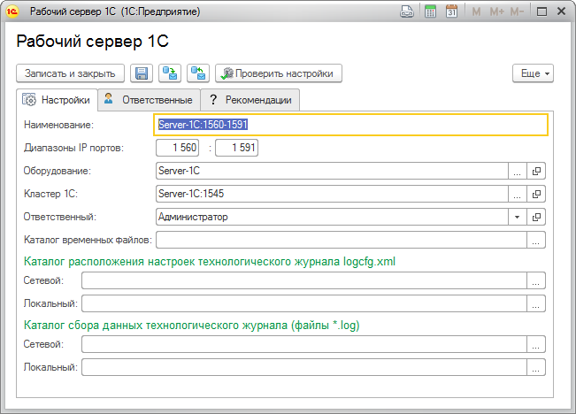

Данная форма позволит вам заполнить настройки рабочего сервера.
Для регистрации в ЦКК нового рабочего сервера необходимо воспользоваться справочником "Площадки эксплуатации". В группе команд "Добавить" необходимо выбрать пункт "Рабочий сервер 1С" или через контекстное меню " Добавить рабочий сервер 1С".

Поля "Кластер 1С", "Оборудование" и "Наименование" обязательно для заполнения. Наименование рабочего сервера можно ввести вручную или оно будет сформировано автоматически, после ввода данных в поле "Имя компьютера или IP адрес".